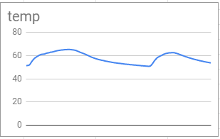
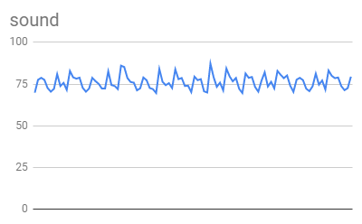
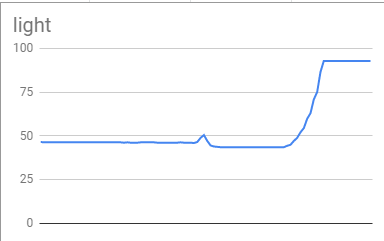
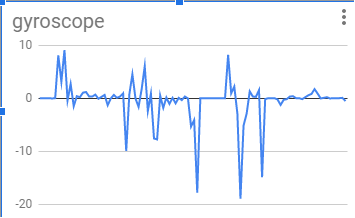
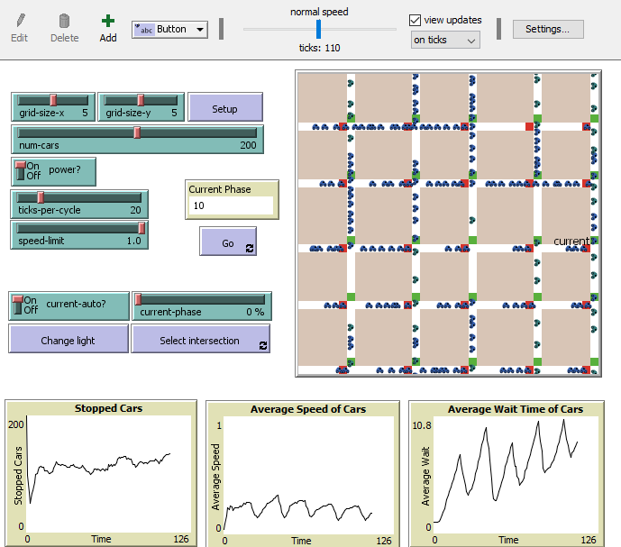
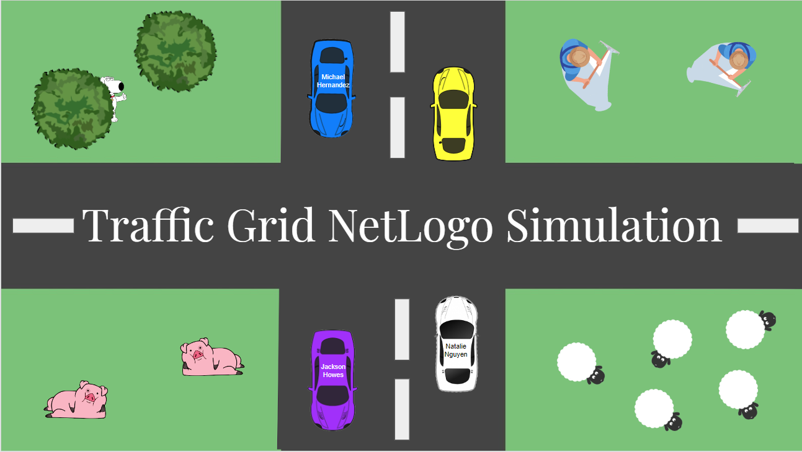
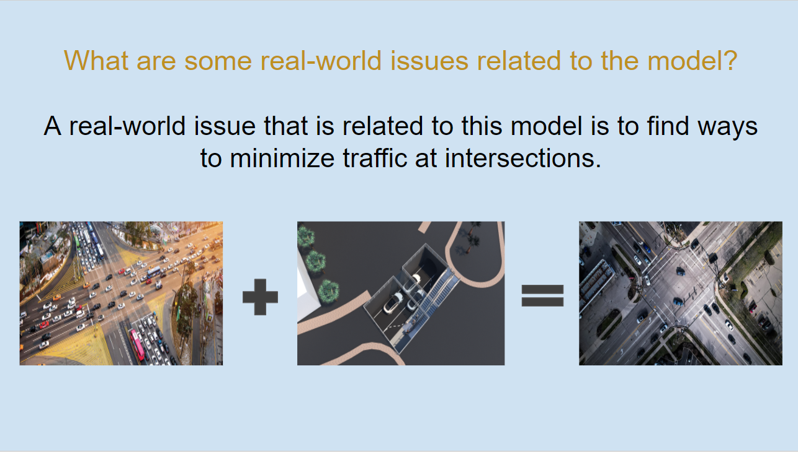

Home
Portfolio
About Me
Natalie's Portfolio
1.1.9 Project - Minion Creator


My project is called the “Minion Creator”. The main objective as in the name is to create a minion based off of the user’s inputs. The code allows the user to have 18 different variations of a minion such as a small minion with one eye and red overalls all the way to a large minion with two eyes and blue overalls. Once the user finishes customizing their minion, the minion gets on top of Gru’s car and rides away off the screen. Then, the user is greeted by their minion with a background saying TA-DA!.
1.2.5 Project - Fishing Game


My project is called the “Fishing Game”. The goal of this game is to click as many fish as possible during the 15 seconds timer. Each fish will be worth different points and they will appear randomly on the screen. The game will update the player's score on the screen. After the game is over, a leaderboard will show up to show the player their rank.
1.3.1 Project - Inner Pup Ecard


My ecard was designed for the kids in the children's hospitals. This greeting card is interactive and the kids will be able to figure out what type of puppy they are by picking the image that they like more. This card is colorful, fun, and cute, which could be a nice distraction that can bring a smile to their faces.
Scratch Project - Car Racing Game


My Scratch Project is called the "Car Racing Game". This is a two players game and they will be racing against each other. There will be boosters on the track. One of them will slow you down and the other speed the cars up. After one full lap, the background will change to another track and the costumes will also change.
3.1.6 Project - Rover Phone Home




This project is called Rover Phone Home. The goal is to discover the location of the lost rover using the data provided. I had to categorize the data into the four groups: light, sound, temperature, and gyroscope. Then, I inserted a graph for each of the category. After matching the graphs with the descriptions given, the lost rover's location is inland forests.
4.1.4 Project - Understanding Complex Simulation



This project is called Understanding Complex Simulation. The goal is to analyze the complex simulation and be able to explain how computers can be used to represent real-world phenomena. I chose the traffic grid simulation, and created a presentation answering several questions about the model. After researching and exploring, I compared the use of the simulation with real-world context, and came up with a conclusion for my model.
Interactive Fiction Rags to Riches.